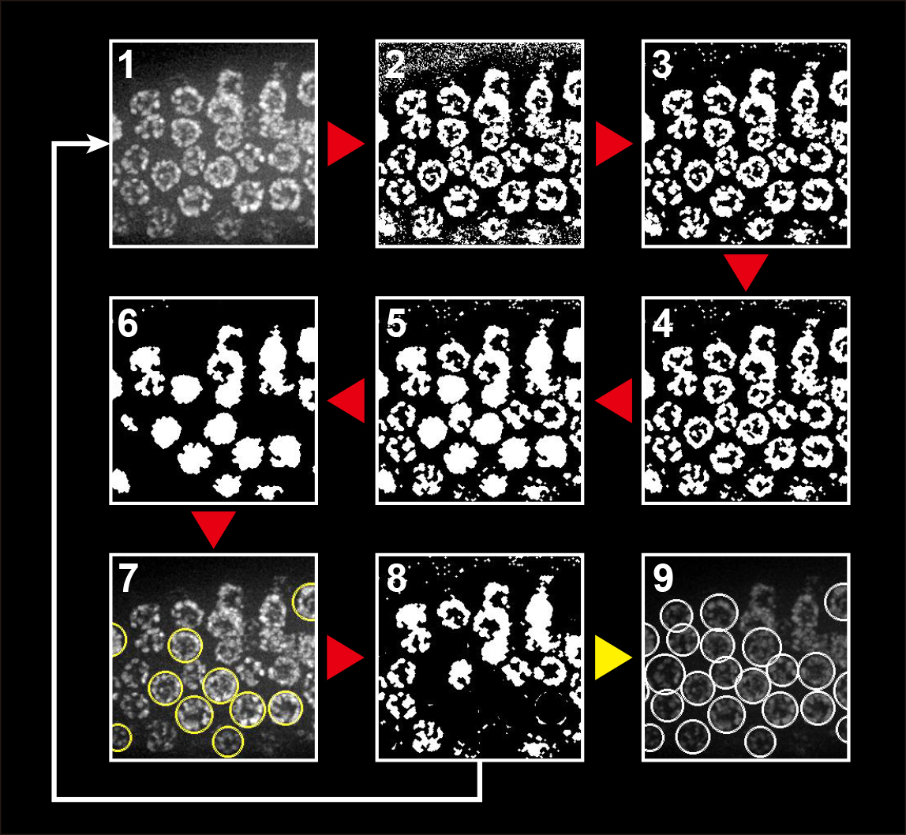

"nucleiSeg" is a Python script I worte for a simple task - nucleus segmentation based on a 2-D DAPI-stained worm gonad image. This script automates annoying image analysis work if you are looking at something in a "nucleus-wise" way.
The way by which this little tool works is illustrated as below. During each iteration, nuclei are picked out through these steps: 1) Starting image 2) Local thresholding 3) Denoising 4) Closing gaps 5) Filling nuclei 6) Picking out objects 7) selecting well-segmented nuclei 8) Masking picked nuclei before next iteration. The iteration stops if no more "good" nuclei can be picked out. Then you'll get the 9) Final segmentation result.

The script takes a image file as the input and returns a CSV file as the output, in which you'll have the information about the centroid and the radius of an "equivalent circular nucleus" of each individual nucleus. With most nuclei segmented out, further analysis can be built on top of this - for instance, foci-counting using blob-detection algorithms, or texture detection tasks.
This little tool makes use of the Python image analysis toolkit scikit-image, the source code has been uploaded and can be found in my GitHub Repo.